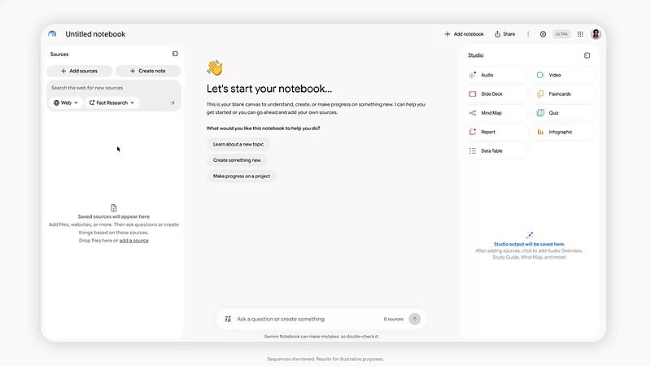
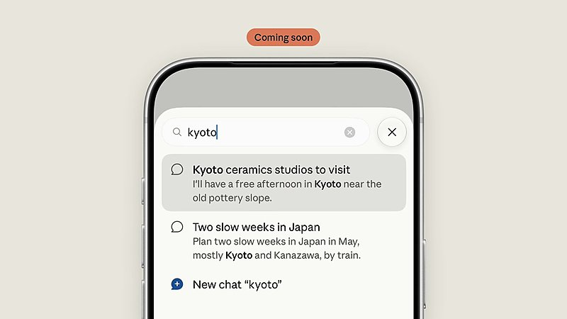

AI 日报 · 10月31日
教材开放与训练边界，AI 的入口正在重写
Google 为 Gemini Notebook 加入数百本免费教材，OpenAI 宣布将支持网站共享训练偏好信号；Builder 在讨论更易接入的代码工作流，也提醒要区分忙碌感与真实成果。
可信来源
内容授权
开发工具
Agent 工作流
6
Builder 动态
3
今日上榜项目
3
重点原文
1
公开视频
今日要点
来源与引用一起进入笔记本
Google 10 月 29 日宣布，学生可在 Gemini Notebook 中免费加入来自美国和印度出版方的数百本教材。回答以教材为依据，附页内引用与原文链接；学习指南、测验和闪卡也可据此生成。Josh Woodward 原帖称目录超过 700 本，官方博客使用“数百本”的表述。
公告是实施承诺，尚未正式上线
OpenAI 10 月 30 日表示，未来数月将支持 robots.txt 中一个供多家提供方识别的通用信号，让网站表达内容是否用于基础生成式 AI 训练的偏好。现有按爬虫设置的控制仍继续生效；具体实施细节待后续公布。
深度对话
《State of AI 2026》：能力预测之外先看安全与验证
Matt Turck 访谈 State of AI Report 作者 Nathan Benaich。以下依据 follow-builders 提供的节目逐字稿和原频道视频整理；“2027 年实现 AGI”等是嘉宾预测，不是既成事实。
模型参与研究，仍需判断问题是否值得做
Benaich 讨论了 AI 参与模型研发的案例，同时指出，找到可验证任务并评估研究方向的质量仍是关键。
近期网络风险比远期预测更可操作
他把网络安全视为眼前需要处理的风险，并提出让前沿模型持续测试和修补获授权的基础设施；这是访谈中的方案设想。
算力扩张会遇到现实约束
对话还讨论数据中心选址、能源、噪声和社区接受度。嘉宾提到的项目金额与民调未经本期独立复核，故不作为事实数字引用。
资讯精选
内容、平台与运行环境同步调整
Google｜Gemini Notebook 提供免费教材目录
来自 OpenStax、Open Textbook Library、S Chand Publishing 等提供方的教材可作为笔记本来源，回答附来源引用；可用目录以产品内实际显示为准。
Vercel｜Node.js 26 LTS 可用于构建与函数
Vercel 10 月 29 日宣布 Node.js 26 LTS 正式可用，并作为新项目默认版本；已有项目是否升级取决于 package.json 的 engines 配置。
已检查 feeds.json 四条中文 RSS：截至 10 月 31 日上午无当日新文。以下采用可核验的原始发布，保留各自发布日期。
Builder 动态
更快接入之前，也要看真正完成了什么
Josh Woodward｜教材进入 Gemini Notebook
Google 产品负责人称 Notebook 新增超过 700 本免费教材。官方博客确认来自多家出版方的数百本教材，并说明回答会附教材原文引用；配图为原帖演示视频画面。

Thibault Sottiaux｜提高 Work 与 Codex 使用限额
OpenAI 的 Thibault 发帖称 Pro 100、200、500 档及 Business Premium 的使用限额即日起翻倍，并说明 Pro 200 的 Work 与 Codex 限额保持不降；以账户内实际额度为准。
Amjad Masad｜GitHub 仓库可直接导入 Replit
Replit CEO 展示通过粘贴 GitHub 链接设置并运行项目的入口。Replit 文档也确认支持从 GitHub 导入；实际能否直接运行仍取决于仓库依赖和配置。
Guillermo Rauch｜让 Agent 反馈部署体验
Vercel CEO 认为未来工程工作会有跨组织 Agent 协作，并鼓励在 AGENTS.md 中提示 Agent 发送产品反馈。Vercel MCP 已提供需用户明确请求的 submit_feedback 工具；跨公司协作仍属他的判断。
Thariq｜警惕编码 Agent 的忙碌幻觉
Thariq 提醒：连续与编码 Agent 工作可能让人感觉一直在推进，实际成果却没有发生。这是个人观察，也值得拿交付物和验收结果来检验。
Claude｜移动端即将支持下拉搜索
Claude 官方账号预告 iPhone 与 iPad 将提供下拉搜索，可查找历史对话、项目和设置；原帖明确标注“即将推出”，配图是预览演示。

GitHub Trending
Agent 技能、协作空间与轻量浏览器


取 10 月 31 日 GitHub Trending 页面，避开近两期重复项目。星标、分叉、语言和主题为本次 GitHub API 快照；功能来自仓库自述，未独立测评。
今日思考
Google 把可引用的教材放进学习工具，OpenAI 讨论网站如何表达训练用途偏好；两者都提醒我们，AI 产品需要说清内容从何而来、允许如何使用。开发者这边，导入仓库和多 Agent 协作降低了启动成本，却不会自动产生有用的交付。今日一问：你的工作流能否同时回答“依据哪份原文”“可做哪些动作”“最后交付是否通过验收”？
参考来源
Google｜Gemini Notebook 教材目录
OpenAI｜网站训练偏好信号
Vercel｜Node.js 26 LTS
MAD Podcast｜Nathan Benaich 原视频
Josh Woodward｜Notebook 原帖
Thibault Sottiaux｜限额原帖
Amjad Masad｜Replit 原帖
Replit｜GitHub 导入文档
Guillermo Rauch｜Agent 反馈原帖
Vercel｜MCP 反馈工具
Thariq｜编码 Agent 反思原帖
Claude｜移动端搜索原帖
GitHub｜10 月 31 日 Trending
expo/skills
macro-inc/macro
lightpanda-io/browser